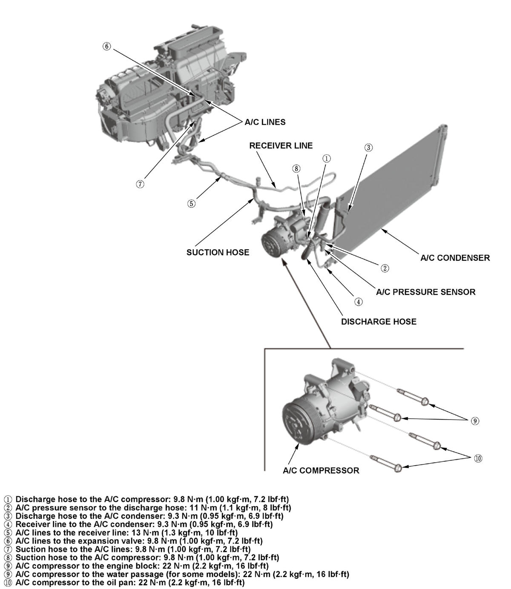

LEMON Manuals
: Even more car manuals for everyone: 1960-2025
Home
>>
Honda
>>
2016
>>
Civic LX, 4D Sedan, Automatic CVT Trans
>>
Repair and Diagnosis
>>
Heating, Ventilation & A/C (HVAC)
>>
HVAC Control Systems
>>
HVAC System - Service Information
>>
Removal and Installation
>>
A/C Line Removal and Installation
>>
Exploded View
Exploded View
A/C Line - Remove and Install
Fig 1: A/C Line Components With Torque Specifications

Courtesy of HONDA, U.S.A., INC.